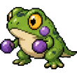

Tap a stage to read its story.
A round, bright-green toadlet barely bigger than a fist, Toxadpole has wide yellow eyes and two small purple orbs dangling from its sides like toxic baubles. Its belly is a sickly yellow-green, and its stubby limbs end in round, sticky toes. Restless and curious, it hops in tight circles when it senses a name it has never heard - tapping its baubles together to produce a soft, venomous chime. In the Light Grove's glowing clearings, it pokes its nose into every glowing flower, sniffing for the sweeter poisons.
Field note: Its purple side-orbs glow faintly at dusk, luring night insects straight into its waiting mouth.
Light Grove. Toxadpole and its family are found in the Light Grove. See everyone who lives there.
Share a Bond Food that matches its types to become friends. Toxadpole loves:
A Bond Food is not a trick. It joins your spirit with the Kimuro's spirit, and only when it chooses you.
Print the Kimuro adventure packs: mazes, cards, a board game and Bond Mark medals.
See the printable packs